| 항목 | 결과 |
|---|---|
Packages/GyeopPackages swift test (Core·CardKit·GyeopKit·DataKit·DesignSystem) | 전부 통과 |
AppClip/AppClipKit swift test (ClipModel 레인·보존 정책·URL 파서) | 전부 통과 |
xcodebuild Gyeop 스킴 — 빌드 + 유닛 + UI 테스트 6종 (스크린샷·AX5/XS·실패 경로 포함) | 전부 통과 |
xcodebuild GyeopClip 스킴 — 빌드 + 클립 레인 관통·실패 UI 테스트 | 전부 통과 |
| 사용자 노출 "러너/아카데미" 문자열 (App/·AppClip/·UITests/ 전수 rg) | 0건 |
| 내비게이션 배선표 1:1 전수 대조 (§1 클립 레인 9화면 + §2 변형 5종) | 불일치 3건 발견 → 코드 수정 (아래 R4) |
| 배선표 항목 | 이전 코드 | 수정 |
|---|---|---|
§1-3 vibe: 카드 4택1 → 선택 표시, 미선택이면 「다음」 비활성, 「다음」 → intro |
원탭 즉시 다음 화면 (선택 표시·다음 버튼 없음) | 선택은 화면에 남고(강조·isSelected), 하단 「다음」 버튼 — 미선택 시 비활성. 본앱·클립 공통(소스 공유), UI 테스트 4개 파일 갱신 |
§1-2 interests 뒤로 스와이프 → clip (시스템 제스처) |
reception이 NavigationStack 밖 — 복귀 경로 없음 | 클립 레인 입구를 reception 루트의 NavigationStack으로 재조립, 온보딩 3단계를 push로. 시스템 제스처로 복귀하면 단계도 clip으로 (ClipModel.backToReception). 클립 UI 테스트로 검증 |
§1-8 keep 「전체 앱 받기」 → SKOverlay → 완료 시 done |
오버레이만 띄우고 전환 없음 (+ 오버레이 닫은 뒤 재탭 불가) | SKOverlayDelegate로 닫힘(완료) 시점을 받아 done 전환 (ClipModel.finishInstallSuggestion). 단위 테스트 2건 추가 |
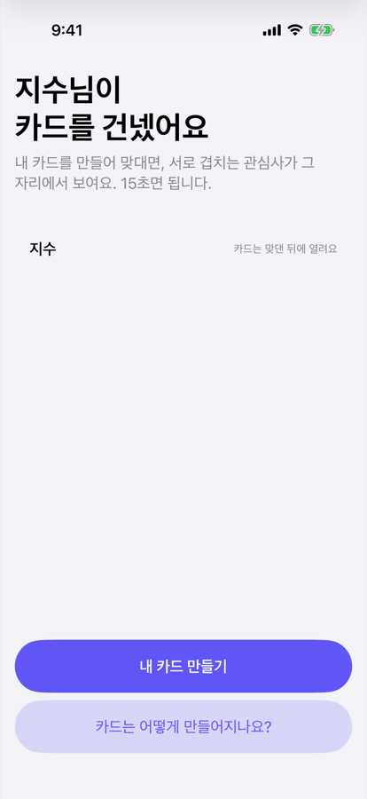
?t=토큰&n=닉네임)의 발신자 닉네임이 헤드라인·카드 자리에 반영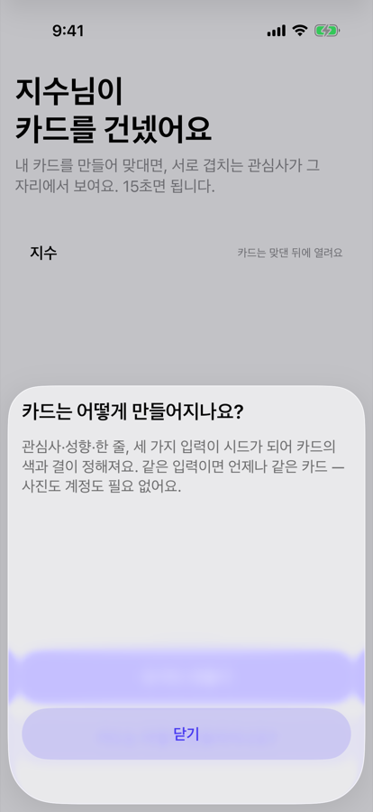
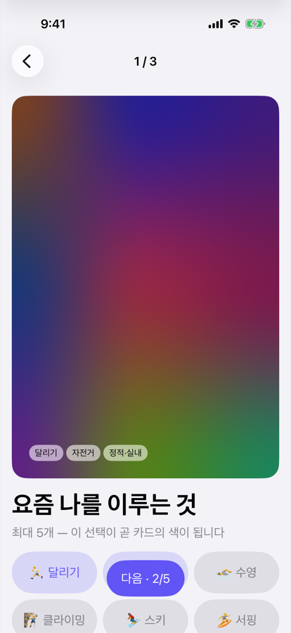
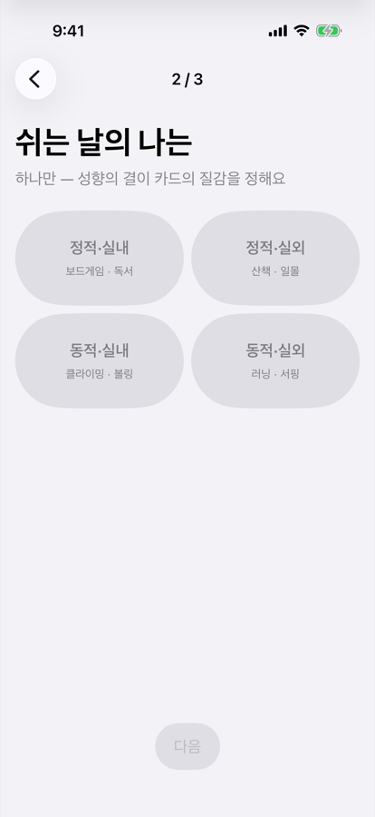
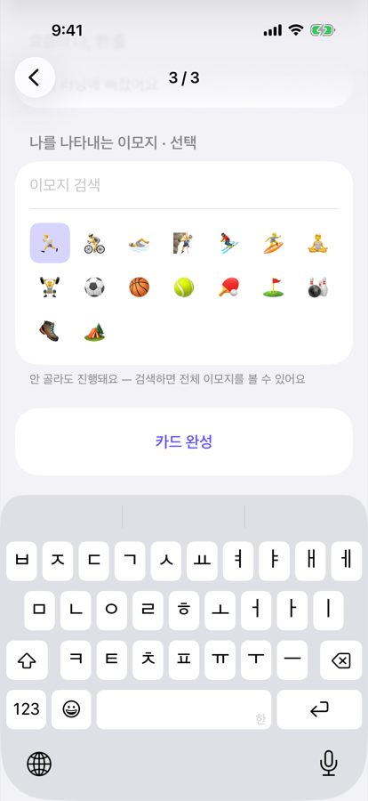
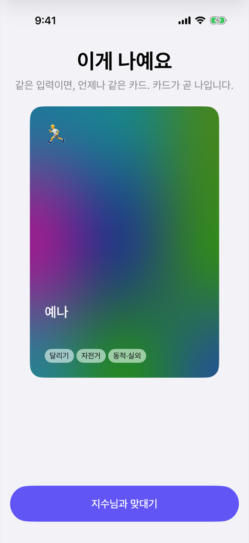
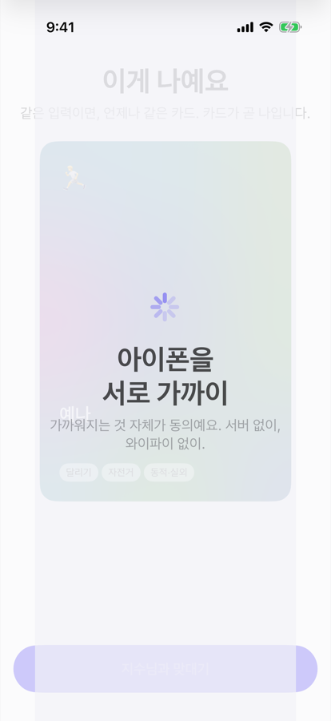
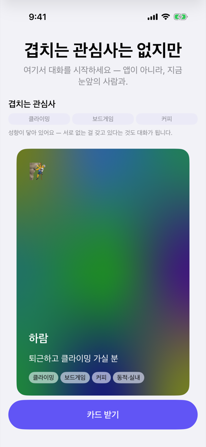
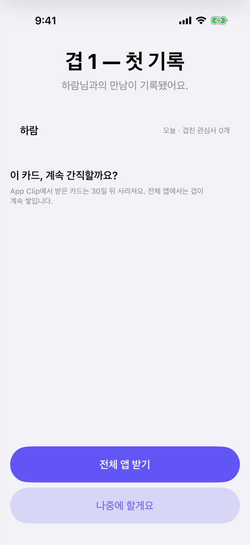
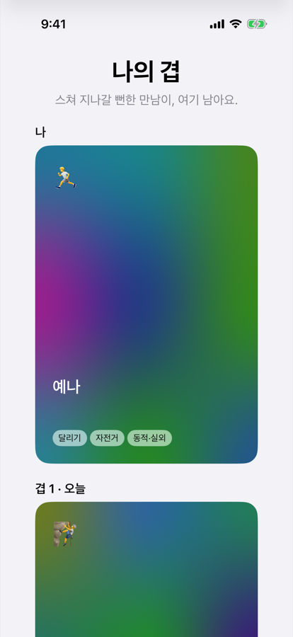
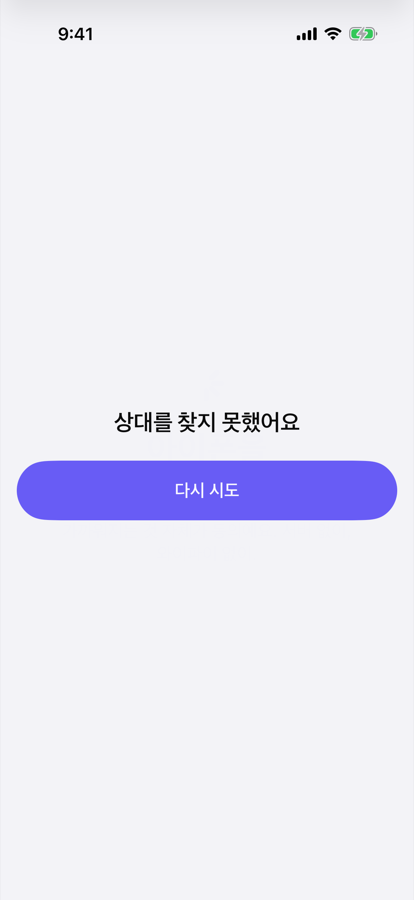
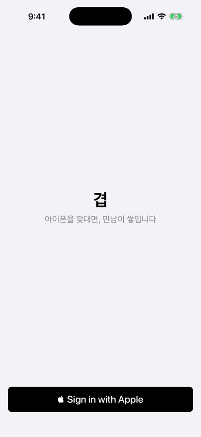
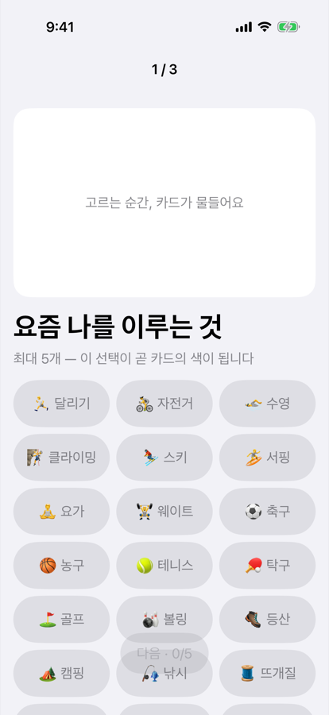
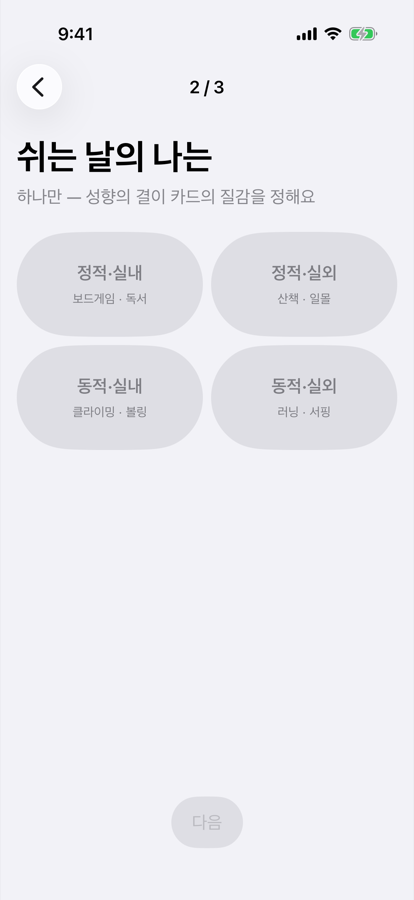
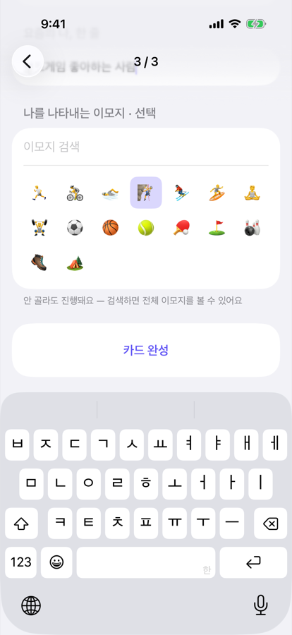
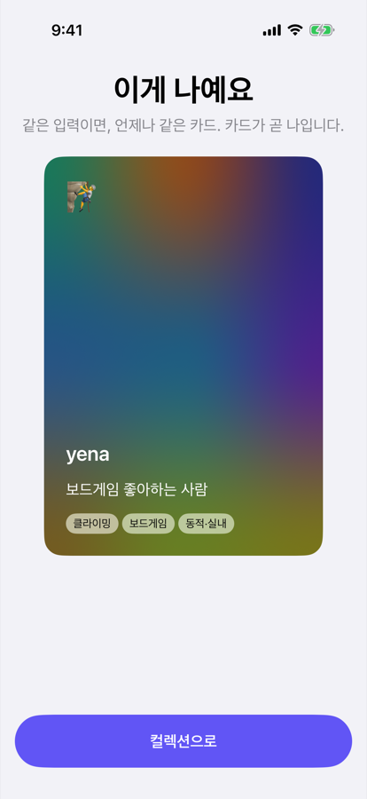
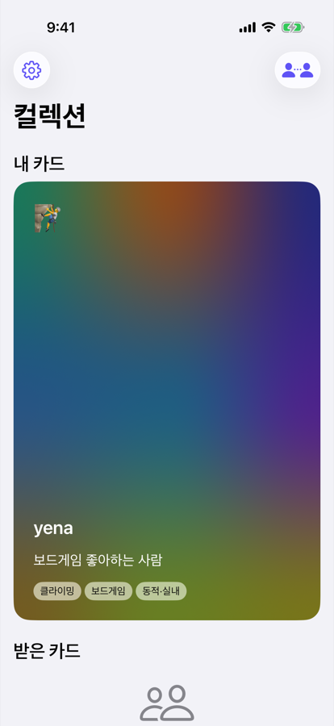
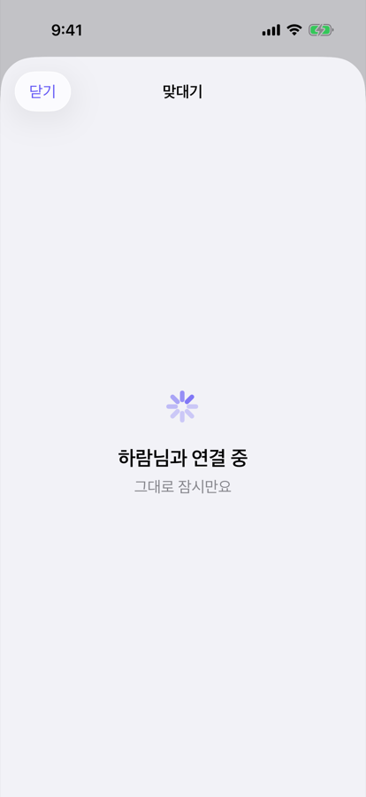
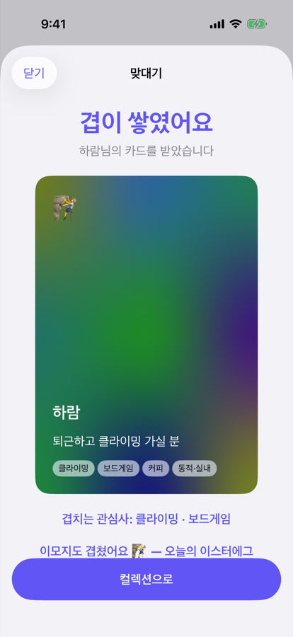
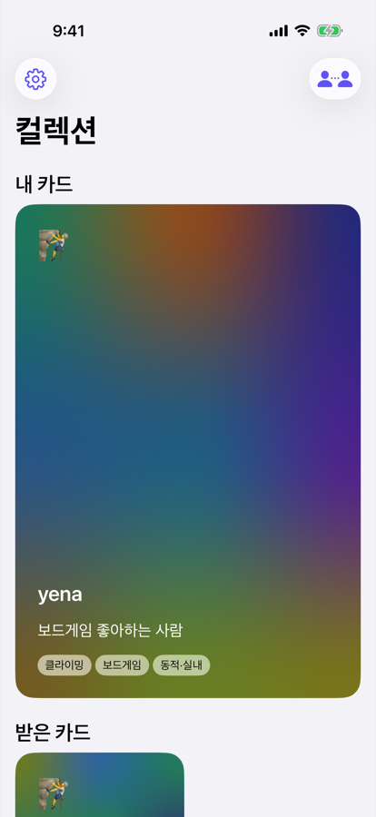
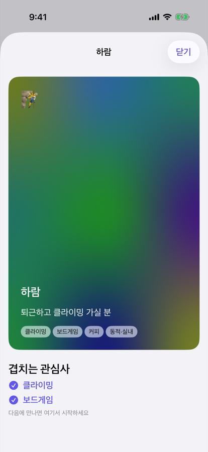
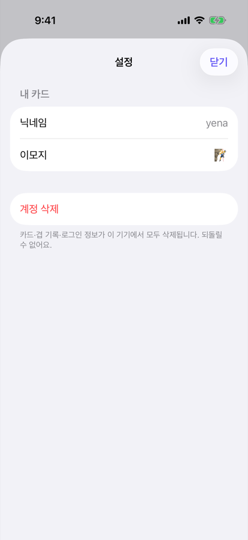
docs/device-required.md 참조.
이 문서는 통합 세션이 생성했다. 스크린샷은 UI 테스트 첨부(xcresult) 자동 추출 —
재촬영: Gyeop 스킴 ScreenshotAndAccessibilityUITests, GyeopClip 스킴 ClipLaneUITests.
소유자 승인 전 추가 구현 없음.